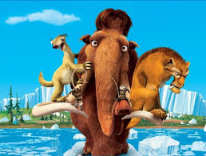
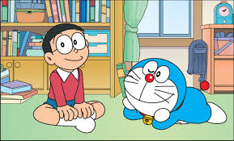

Vua sư tử
Na Tra
Kỷ Băng Hà
Doremon
Sự phát triển của internet đã giúp cho trẻ em dễ dàng tiếp cận với nhiều loại thông tin khác nhau, trong đó có cả những thông tin hữu ích và nguy hại. Để phòng ngừa những nội dung nguy hại có thể ngấm vào trẻ em khi lang thang trên mạng, đặc biệt là xem các video trên youtube hoặc các trang web có xen lẫn những nội dung phim bạo lực. Website chuyên biệt về phim hoạt hình ra đời nhằm tập hợp có chọn lọc những nội dung hữu ích, phù hợp với trình độ và tâm lý lứa tuổi trẻ em. Để đáp ứng được nhu cầu xem phim hoạt hình từ trẻ nhỏ website cần có những tiêu chí sau: Phim nói chung và phim hoạt hình rất hay và ý nghĩa có tính giáo dục cao tuy nhiên phần lớn là phim nước ngoài được dịch lại và có phụ đề, nên trẻ con rất khó tiếp cận, do đó website cần sưu tầm và tổng hợp tất cả các phim có Audio Việt – Thuyết minh, chất lượng phim đạt chuẩn HD 720p đến FullHD 1080p. Các phim hoạt hình hiển thị được sắp xếp theo tiêu chí mới cập nhật hoặc có số lượng người xem nhiều nhất. Người xem có thể tìm kiếm phim theo tên. Website đúng trọng tâm, đơn giản, dễ sử dụng, dễ xem, đặc biệt là link gốc trên Server giúp tải nhanh, chống giật, không đặt quảng cáo ở bất kỳ vị trí nào trên site cũng như trong phim.
Sự phát triển của internet đã giúp cho trẻ em dễ dàng tiếp cận với nhiều loại thông tin khác nhau, trong đó có cả những thông tin hữu ích và nguy hại. Để phòng ngừa những nội dung nguy hại có thể ngấm vào trẻ em khi lang thang trên mạng, đặc biệt là xem các video trên youtube hoặc các trang web có xen lẫn những nội dung phim bạo lực. Website chuyên biệt về phim hoạt hình ra đời nhằm tập hợp có chọn lọc những nội dung hữu ích, phù hợp với trình độ và tâm lý lứa tuổi trẻ em. Để đáp ứng được nhu cầu xem phim hoạt hình từ trẻ nhỏ website cần có những tiêu chí sau: Phim nói chung và phim hoạt hình rất hay và ý nghĩa có tính giáo dục cao tuy nhiên phần lớn là phim nước ngoài được dịch lại và có phụ đề, nên trẻ con rất khó tiếp cận, do đó website cần sưu tầm và tổng hợp tất cả các phim có Audio Việt – Thuyết minh, chất lượng phim đạt chuẩn HD 720p đến FullHD 1080p. Các phim hoạt hình hiển thị được sắp xếp theo tiêu chí mới cập nhật hoặc có số lượng người xem nhiều nhất. Người xem có thể tìm kiếm phim theo tên. Website đúng trọng tâm, đơn giản, dễ sử dụng, dễ xem, đặc biệt là link gốc trên Server giúp tải nhanh, chống giật, không đặt quảng cáo ở bất kỳ vị trí nào trên site cũng như trong phim.